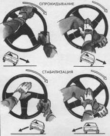

Стабилизация при боковом опрокидывании
Аварийная ситуация, связанная с опрокидыванием автомобиля, является следствием критических ситуаций: сноса передней оси, бокового скольжения, критического и ритмического заносов, вращения автомобиля. Сами по себе эти критические ситуации не могут перерасти в опрокидывание до тех пор, пока скольжение не прерывается “упором” – боковым ударом о препятствие (яму, бугор, выступ, бордюр и др.).
Опрокидывание может возникнуть при съезде одним или двумя колесами в глубокую обочину (кювет), чаще всего в процессе поворота. Такие ситуации возникают под действием центробежной силы из-за высокой скорости движения. Когда колесо или колеса автомобиля опускаются в кювет, общий центр тяжести смещается кнаружи. Автомобиль оказывается в неуравновешенном состоянии, и даже небольшой импульс боковой силы вызывает глубокий крен, а затем и опрокидывание из-за того, что мягкий грунт обочины препятствует боковому скольжению.
Однако поводом для опрокидывания в большинстве случаев служат действия самого водителя (!). Стремясь выйти из кювета и вернуть автомобиль на проезжую часть, водитель допускает сразу две ошибки: “закрывает газ” и резко поворачивает колеса в сторону дороги. Эти действия и дают тот вращательный импульс, который опрокидывает автомобиль. Повернутые колеса, загруженные торможением двигателя, создают упор, вокруг которого начинается вращение, притом набранная автомобилем поступательная энергия переходит во вращательную и при высокой скорости заставляет автомобиль сделать несколько опрокидывании через крышу.
Еще более опасным является резкое торможение при одновременном маневре в кювете, особенно в тех случаях, когда сбоку имеется упор (препятствие). Полностью заторможенные колеса создают такой мощный вращательный импульс, что автомобиль, опрокидываясь, буквально взвивается в воздух, и вращение происходит в безопорной фазе очень интенсивно, продолжаясь после приземления на грунт.
Чаще всего первый импульс опрокидывания при ударе наружной поверхностью колеса об упор характеризуется невысокой скоростью, что позволяет водителю своевременно отреагировать стабилизирующими действиями. Эти действия прежде всего связаны с поворотом рулевого колеса в сторону опрокидывания. Прием выполняется двумя руками силовым способом, так как требуется преодолеть сопротивление переднего колеса, загруженного весом автомобиля. Выполняя это действие, необходимо прежде всего “преодолеть себя”, т. е. отказаться от возможности выйти из кювета, сохранить устойчивость и управляемость для дальнейшей активной борьбы за безопасность. Вторая “сверхзадача”—отказаться от торможения, что также психологически сложно из-за экстремальности ситуации. Третье условие – сохранить тягу двигателя, чтобы выбраться из кювета по более плавной траектории, исключающей возможность опрокидывания.
В ряде случаев борьба водителя за устойчивость автомобиля не прекращается после реакции на опрокидывание. Она может продолжаться в форме сохранения равновесия, если автомобиль продолжает двигаться на двух колесах, в форме реакции на критический (см. прием 37) или ритмичный (см. прием 38) занос или в форме преодоления участка “автокросса”, если не удалось сразу выйти на дорогу. Эта борьба ведется методами силового или скоростного руления в сочетании с переменным дросселированием.

Страхуясь от опрокидывания, прекратите торможение, с силой поверните рулевое колесо в сторону опрокидывания, а затем выровняйте автомобиль.
Существует и другой механизм опрокидывания, связанный с подбросом внутреннего разгруженного колеса (см. приемы 21 и 31) в повороте или при резком маневре. Бугор или другое препятствие на дороге создает эффект “подкидного” гимнастического мостика, который приводит к быстротечному опрокидыванию. Реакция водителя чаще всего оказывается запоздалой, так как действия по стабилизации нужно выполнять со значительным опережением.
Резюмируя, следует отметить четыре типа критических ситуаций, приводящих к боковому опрокидыванию.
1. Удар задним колесом в боковую опору при вращении автомобиля, ритмическом или критическом заносе.
2. Соскальзывание в кювет заднего колеса.
3. Соскальзывание в кювет переднего наружного колеса.
4. Подброс разгруженного внутреннего переднего колеса в повороте.
Действия по стабилизации автомобиля будут зависеть от самой критической ситуации, возможностей водителя и состояния дороги. Общие рекомендации:
– не тормозить!
– повернуть рулевое колесо в сторону опрокидывания, а затем выровнять;
– продолжать при необходимости стабилизирующие действия способами силового или скоростного руления и переменного дросселирования, чтобы преодолеть последствия критической ситуации.